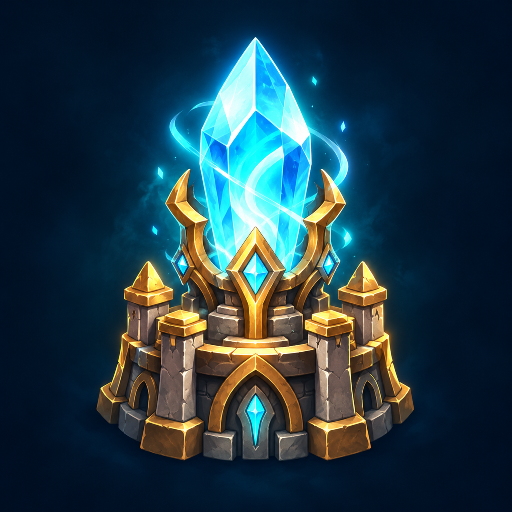

Teste fechadoERAHOLD
Viaje pelas eras. Construa sua lenda.
Escolha entre Guerreiro, Arqueiro e Mago, enfrente expedições de ação por 11 eras, forje e melhore equipamentos e evolua sua base. Tudo funciona offline e o progresso fica salvo no seu aparelho.
Sem compras com dinheiro real e sem conta. A Alpha v35, em teste fechado, não exibe anúncios. As próximas versões terão três anúncios recompensados do Google AdMob, todos voluntários (você escolhe assistir), com consentimento quando exigido.
Current closed-testing build (Alpha v35): no ads, no real-money purchases, no account. Upcoming versions will include three optional rewarded ads from Google AdMob.